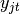
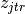

lagrange module¶
| Filename: | lagrange.py |
|---|---|
| Author: | marco caserta |
| Date: | 09.03.2017 |
| Last Update: | 05.06.17 |
Copyright (C) 2017 by Marco Caserta (marco dot caserta at ie dot edu)
(This document was generated on 05.06.17 at 13:32.)
This program is free software; you can redistribute it and/or modify it under the terms of the GNU General Public License as published by the Free Software Foundation; either version 2 of the License, or (at your option) any later version.
This program is distributed in the hope that it will be useful, but WITHOUT ANY WARRANTY; without even the implied warranty of MERCHANTABILITY or FITNESS FOR A PARTICULAR PURPOSE. See the GNU General Public License for more details.
You should have received a copy of the GNU General Public License along with this program; if not, write to the Free Software Foundation, Inc., 59 Temple Place - Suite 330, Boston, MA 02111-1307, USA.
This code implements a Lagrangean relaxation scheme for the multi-item multi-period capacitated lot sizing problem.
-
class
lagrange.Lagrange(inp, ub)[source]¶ Bases:
objectThis class implements the Lagrangean scheme for the CLSP. We relax in a Lagrangean fashion the capacity constraints. Therefore, the relaxed problem can be separated over the items.
The same formulation used for the other techniques, i.e., Benders and Dantzig-Wolfe, is used here: The Single Plant Location formulation.
Initialization of the Lagrangean class. We define a cplex object, which contains the relaxed problem, along with the decision variables  and .
The formulation of the relaxed problem is given here (note: The problem can now be separated over the items):
![\begin{eqnarray}
& \min L(\textbf{u}) = & \sum_{j=1}^n \sum_{t=1}^T f'_{jt}y_{jt} +
\sum_{j=1}^n \sum_{r=1}^T \sum_{t=1}^{r-1} h'_{jtr}z_{jtr} -\sum_{t=1}^T u_t
\label{eq:LR-obj}\\
&\mbox{s.t}& \sum_{t=1}^r z_{jtr} = d_{jr},
\quad j = 1, \ldots, n , \quad r = 1, \dots, T
\label{eq:LR-demand-constr} \\
&& z_{jtr} \leq d_{jr}y_{jt},
\quad j = 1, \ldots, n , \quad t = 1, \dots, T, \quad r=t,\dots,T
\label{eq:LR-logic-constr} \\
&& \sum_{r=t}^T z_{jtr} \leq M y_{jt},
\quad j = 1, \ldots, n , \quad t = 1, \dots, T
\label{eq:LR-cumLogic-constr} \\
&& y_{jt} \in \left\{0,1\right\}, \quad j = 1, \ldots, n, \quad
t=1, \ldots, T \label{eq:LR-y-binary}\\
&& z_{jtr} \geq 0, \quad j = 1, \ldots, n, \quad
t=1, \ldots, T, \quad r = t,\dots,T \label{eq:LR-z-cont}
\end{eqnarray}](_images/math/6076092a35ad75aab2dbcf910b8b1cad78aefeda.png)
-
FixVarsLP(mip, fixToZero, fixToOne, cZero, cOne)[source]¶ Fixing scheme. Some variables are soft-fixed to 0 or 1, based on the LP scheme described in
clspBenders.MIP.solveLPZero(). The two vectorsfixToOneandfixToZeroare obtained solving twice the LP relaxation of the original problem, with the goal of finding a subset of variables whose values can “safely” be set to 0 or 1.
-
checkConvergence()[source]¶ One of the two stopping criteria. If the improvement in the lower bound in the last 50 iterations is below a certain value, we assume the Lagrangean phase has converged and, therefore, we stop (or restart).
-
lagrangeanPhase(inp, mip, fixToZero, fixToOne, cPercent, cZero, cOne)[source]¶ We employ a primal-dual scheme, in which the Lagrangean relaxation provides a sequence of (non-monotonically) increasing lower bound, while a corridor-based primal scheme gives upper bounds. The basic steps of the algorithm are as folllows:
- soft-fix some of the variables to 0 or 1 (LP-based scheme)
- initialize Lagrangean multipliers
- perform one Lagrangean step, i.e., solve the relaxed problems for the given set of multipliers
 we obtain a Lagrangean lower bound
we obtain a Lagrangean lower bound zLand a solutionyL - update Lagrangean multipliers (subgradient optimization)
- periodically, apply primal scheme (add corridor around
yLand solve constrained CLSP) - if stoppingCriteria are reached, either restart or stop (the outer cycle is repeated three times, after which the algorithm stops.)
-
lagrangeanStep(inp)[source]¶ Each Lagrangean step receives as input the current multipliers. Based on the value of
 , i.e.,
, i.e., lmult, we recompute the objective function coefficients as:
Next, we solve the current Lagrangean problem. Note that the Lagrangean problem obtained after relaxing the capacity constraints, could be separated over the item and solved using efficient methods, e.g., Wagner-Within.
We indicate with
zL,yL, andzLthe objective function of the Lagrangean solution, the setup schedule, and the production plan, respectively.Note that each Lagrangean solution provides a lower bound. Therefore, if the newly found value
zLis better (higher) than the best known lower bound so far, we update the lower bound.
-
lmultUpdate(inp)[source]¶ Update Lagrangean multipliers. We use a subgradient deflection technique to update the value of the multipliers (see paper for details). A subgradient is:

where the subgradient
 is a function of
is a function of
 via both
via both  and
and
 .
.
-
multRandomPerturbation(inp)[source]¶ We run three Lagrangean cycles. At the end of each cycle, we randomly perturb the multipliers and restart. The idea is to introduce some “shaking” into the multipliers, without starting completely from scratch.
-
refineMIPSolution(inp, mip, cPercent)[source]¶ Primal scheme based on the corridor method and the Lagrangean relaxation. The original MIP formulation is provided as input here (object
mip). We then build a corridor around the incumbent Lagrangean solutionyLobtained withinlagrangeanStep(). Once the corridor constraint is added to the original formulation, we solve the constrained CLSP.A solution found by this primal scheme provides a valid upper bound to the optimal solution. Therefore, if a new best value is found, we update the bound.
Note: The corridor constraint is removed at the end of the primal scheme, to avoid overconstraining the original formulation.
-